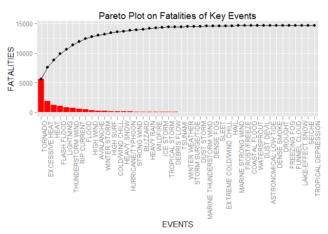
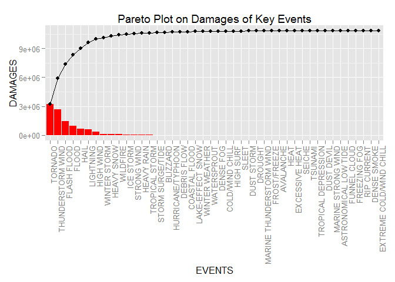

Storms and other severe weather events can cause both public health and economic problems for communities and municipalities. Many severe events can result in fatalities, injuries, and property damage, and preventing such outcomes to the extent possible is a key concern.
This project involves exploring the U.S. National Oceanic and Atmospheric Administration’s (NOAA) storm database. This database tracks characteristics of major storms and weather events in the United States, including when and where they occur, as well as estimates of any fatalities, injuries, and property damage.
The objective of this report is to answer the questions below:
Across the United States, which types of events (as indicated in the EVTYPE variable) are most harmful with respect to population health?
Across the United States, which types of events have the greatest economic consequences?
The data for this assignment come in the form of a comma-separated-value file compressed via the bzip2 algorithm to reduce its size. You can download the file from the course web site: Storm Data [47Mb]
There is also some documentation of the database available. Here you will find how some of the variables are constructed/defined.
National Weather Service Storm Data Documentation
National Climatic Data Center Storm Events FAQ
The events in the database start in the year 1950 and end in November 2011. In the earlier years of the database there are generally fewer events recorded, most likely due to a lack of good records. More recent years should be considered more complete.
Clear the environment and bring in all relevant libraries
## Remove everything within the environment
rm(list = ls())
library(plyr)## Warning: package 'plyr' was built under R version 3.1.3library(dplyr)## Warning: package 'dplyr' was built under R version 3.1.3##
## Attaching package: 'dplyr'
##
## The following objects are masked from 'package:plyr':
##
## arrange, count, desc, failwith, id, mutate, rename, summarise,
## summarize
##
## The following objects are masked from 'package:stats':
##
## filter, lag
##
## The following objects are masked from 'package:base':
##
## intersect, setdiff, setequal, unionlibrary(ggplot2)## Warning: package 'ggplot2' was built under R version 3.1.3#library(lubridate)
library(tidyr)## Warning: package 'tidyr' was built under R version 3.1.3## Cheeck if the folder "Explore_data" exist in the working directory, if not available, create it
if (!file.exists("Reproduce_Data")) {
dir.create("Reproduce_Data")
}
## Cheeck if the file "repdata-data-StormData.csv.bz2" exist in the defined folder, if not available, download it
if (!file.exists("Reproduce_Data/repdata-data-StormData.csv.bz2")) {
fileUrl <- "https://d396qusza40orc.cloudfront.net/repdata%2Fdata%2FStormData.csv.bz2"
download.file(fileUrl, destfile = "./Reproduce_Data/repdata-data-StormData.csv.bz2")
}
## Read files
data <- read.csv("./Reproduce_Data/repdata-data-StormData.csv.bz2")# Group data by event and summarize for variables of interest
data$EVTYPE = toupper(data$EVTYPE)
data$EVTYPE = gsub(" ", " ",data$EVTYPE)
data$EVTYPE = gsub("[[:punct:]]", " ", data$EVTYPE)
trim <- function (x) gsub("^\\s+|\\s+$", "", x)
data$EVTYPE = trim(data$EVTYPE)
data = group_by(data, EVTYPE)
data_event = summarise(data,
FATALITIES = sum(FATALITIES),
INJURIES = sum(INJURIES),
DAMAGES = sum(PROPDMG))
## Remove old dataset to free up memory
rm(data)
## Remove irrelevant data
data_event$cumm = data_event$FATALITIES + data_event$INJURIES + data_event$DAMAGES
data_event_tidy = filter(data_event, cumm != 0)
data_event_tidy = data_event_tidy[,1:4]
## Remove old dataset to free up memory
rm(data_event)data_event_tidy$KEY = "OTHERS"
# Event reclassification list
events=list()
events["ASTRONOMICAL LOW TIDE"] = list(c("ASTRONOMICAL LOW"))
events["AVALANCHE"]=list(c("AVALA"))
events["BLIZZARD"]=list(c("BLIZZ"))
events["COASTAL FLOOD"]=list(c("COASTAL SURGE", "EROSION CSTL FLOOD", "COASTAL F"))
events["COLD/WIND CHILL"]=list(c("COLD", "LIGHT SNOW"))
events["DEBRIS FLOW"]=list(c("LANDS"))
events["DENSE FOG"]=list(c("DENSE FOG"))
events["DENSE SMOKE"]=list(c("DENSE SMOKE"))
events["DROUGHT"]=list(c("DROUGHT"))
events["DUST DEVIL"]=list(c("DEVIL"))
events["DUST STORM"]=list(c("DUST STORM", "DUST S"))
events["EXCESSIVE HEAT"]=list(c("IVE HEAT", "EXCESSIVE HEAT"))
events["EXTREME COLD/WIND CHILL"]=list(c("EME COLD", "HYPO", "LOW TEM"))
events["FLASH FLOOD"]=list(c("FLASH"))
events["FLOOD"]=list(c("^FLO", "HIGH WA", "FLOODING", "R FLOOD", "N FLOOD", "RISING WATER", "STREAM FLOOD",
"STREAM FLD", "FLOOD"))
events["FROST/FREEZE"]=list(c("FROST","FREEZE$", "GLAZE"))
events["FUNNEL CLOUD"]=list(c("FUNNEL CLOUD"))
events["FREEZING FOG"]=list(c("FREEZING FOG"))
events["HAIL"]=list(c("HAIL"))
events["HEAT"]=list(c("HEAT", "Y WARM", "HYPER"))
events["HEAVY RAIN"]=list(c("SIVE RAIN", "HEAVY RAIN", "TORRENTIAL RAIN", "HEAVY PRECIP"))
events["HEAVY SNOW"]=list(c("HEAVY SNOW", "SIVE SNOW", "ING SNOW", "RECORD SNOW", "SNOW SQUALL"))
events["HIGH SURF"]=list(c("HIGH SURF", "HIGH SW", "HIGH WA", "HIGH SU", "HEAVY SU", "ROUGH SEAS", "HAZARDOUS SURF", "HIGH SE"))
events["HIGH WIND"]=list(c("HIGH WIND", "DRY MICRO", "E WIND", "Y WIND"))
events["HURRICANE/TYPHOON"]=list(c("HURRICANE","TYPHOON"))
events["ICE STORM"]=list(c("ICE STORM"))
events["LAKE-EFFECT SNOW"]=list(c("LAKE-EFFECT", "LAKE SNOW", "LAKE EFFECT SNOW"))
events["LAKESHORE FLOOD"]=list(c("LAKESHORE FLOOD", "LAKE FLOOD"))
events["LIGHTNING"]=list(c("LIGHTNING", "LIGHTING", "LIGTNTING"))
events["MARINE HAIL"]=list(c("MARINE HAIL"))
events["MARINE HIGH WIND"]=list(c("MARINE HIGH WIND"))
events["MARINE STRONG WIND"]=list(c("MARINE STRONG WIND"))
events["MARINE THUNDERSTORM WIND"]=list(c("MARINE THUNDERSTORM WIND", "MARINE THUNDERSTORM", "MARINE TSTM WIND"))
events["RIP CURRENT"]=list(c("RIP CURRENT"))
events["SEICHE"]=list(c("SEICHE"))
events["SLEET"]=list(c("SLEET", "MIX", "SPRAY", "ZING RAIN", "ZING DRIZZLE", "RAIN/SNOW")) # Mixed Precipitation
events["STORM SURGE/TIDE"]=list(c("STORM SURGE", "STORM TIDE", "COASTAL STORM", "COASTALSTORM"))
events["STRONG WIND"]=list(c("STRONG WIND", "G WIND", "WIND DAMAGE"))
events["THUNDERSTORM WIND"]=list(c("THUNDERSTORM","THUDERSTORM", "TSTM WIND", "T[A-Z]M WIND", "TSTMW"))
events["TORNADO"]=list(c("TORNADO"))
events["TROPICAL DEPRESSION"]=list(c("TROPICAL DEPRESSION"))
events["TROPICAL STORM"]=list(c("TROPICAL STORM"))
events["TSUNAMI"]=list(c("TSUNAMI"))
events["VOLCANIC ASH"]=list(c("VOLCANANIC ASH"))
events["WATERSPROUT"]=list(c("WATERSPOUT"))
events["WILDFIRE"]=list(c("WILDFIRE", "WILD F", "WILD/FOREST F"))
events["WINTER STORM"]=list(c("WINTER STORM"))
events["WINTER WEATHER"]=list(c("WINTER WEATHER"))
for (i in 1:length(events)){
flag = 0
for (j in 1:length(events[[i]])){
data_event_tidy = mutate( data_event_tidy,
KEY = ifelse(
grepl(events[[i]][j], EVTYPE) == TRUE,
ifelse(
KEY == "OTHERS",
names(events[i]),
ifelse(
grepl("^MIX EVENTS: ", KEY) == TRUE,
ifelse(grepl(names(events[i]), KEY) == TRUE,
KEY, paste(KEY, ";", names(events[i]))),
ifelse(grepl(names(events[i]), KEY) == TRUE,
KEY, paste("MIX EVENTS: ", KEY, ";",
names(events[i]))))),
KEY))
}
}data_event_tidy = group_by(data_event_tidy, KEY)
event_summary = summarise(data_event_tidy,
FATALITIES = sum(FATALITIES),
INJURIES = sum(INJURIES),
DAMAGES = sum(DAMAGES))
## Remove old dataset to free up memory
rm(data_event_tidy, events)event_summary$identify = ifelse(grepl("MIX", event_summary$KEY) == TRUE, "MIX EVENTS",
ifelse(grepl("OTHERS", event_summary$KEY) == TRUE, "NON-KEY EVENTS", "KEY EVENTS"))
event_test = group_by(event_summary, identify)
event_test = summarise(event_test,
FATALITIES = sum(FATALITIES),
INJURIES = sum(INJURIES),
DAMAGES = sum(DAMAGES))
event_summary = as.data.frame(event_summary[,1:4])
event_test$PERCENT_FATALITIES = round(prop.table(event_test$FATALITIES)*100,2)
event_test$PERCENT_DAMAGES = round(prop.table(event_test$DAMAGES)*100,2)
event_test## Source: local data frame [3 x 6]
##
## identify FATALITIES INJURIES DAMAGES PERCENT_FATALITIES
## 1 KEY EVENTS 14637 138861 10823520.24 96.65
## 2 MIX EVENTS 370 596 31917.60 2.44
## 3 NON-KEY EVENTS 138 1071 29062.17 0.91
## Variables not shown: PERCENT_DAMAGES (dbl)## Remove old dataset to free up memory
rm(event_test)
## Highlighting on Single Events
event_summary$FLAG = ifelse(grepl("MIX", event_summary$KEY) == TRUE | grepl("OTHERS",event_summary$KEY) == TRUE, "1", "0")
## Remove Mix Events
event_summary = filter(event_summary, FLAG == 0)
event_summary = as.data.frame(event_summary[,1:4])
fatalities_summary = as.data.frame(event_summary[,c(1,2)])
fatalities_summary = arrange(fatalities_summary, desc(FATALITIES))
damages_summary = as.data.frame(event_summary[,c(1,4)])
damages_summary = arrange(damages_summary, desc(DAMAGES))fatalities_summary$CUMM = cumsum(fatalities_summary$FATALITIES)
fatalities_summary$PERCENT_FATALITIES = round(prop.table(fatalities_summary$FATALITIES)*100,2)
fatalities_summary$CUMM_PERCENT_FATAL = cumsum(fatalities_summary$PERCENT_FATALITIES)
fatalities_summary$KEY <- factor(fatalities_summary$KEY, levels=fatalities_summary$KEY)
damages_summary$CUMM = cumsum(damages_summary$DAMAGES)
damages_summary$PERCENT_DAMAGES = round(prop.table(damages_summary$DAMAGES)*100,2)
damages_summary$CUMM_PERCENT_DMG = cumsum(damages_summary$PERCENT_DAMAGES)
damages_summary$KEY <- factor(damages_summary$KEY, levels=damages_summary$KEY)## Plot out Pareto for Fatalities
g1 = ggplot(fatalities_summary, aes(x = KEY))
g2 = geom_bar(aes(y = FATALITIES), fill="red", stat="identity")
g3 = geom_point(aes(y = CUMM))
g4 = geom_path(aes(y = CUMM, group=1))
g5 = theme(axis.text.x = element_text(angle = 90, hjust = 1))
g6 = labs(x = "EVENTS")
g7 = ggtitle('Pareto Plot on Fatalities of Key Events')
g1 + g2 + g3 + g4 + g5 + g6 + g7
top_fatalities = filter(fatalities_summary, CUMM_PERCENT_FATAL <= 80)
top_fatalities## KEY FATALITIES CUMM PERCENT_FATALITIES CUMM_PERCENT_FATAL
## 1 TORNADO 5633 5633 38.48 38.48
## 2 EXCESSIVE HEAT 1920 7553 13.12 51.60
## 3 HEAT 1253 8806 8.56 60.16
## 4 FLASH FLOOD 1035 9841 7.07 67.23
## 5 LIGHTNING 817 10658 5.58 72.81
## 6 THUNDERSTORM WIND 705 11363 4.82 77.63## Plot out Pareto for Fatalities
g1 = ggplot(damages_summary, aes(x = KEY))
g2 = geom_bar(aes(y = DAMAGES), fill="red", stat="identity")
g3 = geom_point(aes(y = CUMM))
g4 = geom_path(aes(y = CUMM, group=1))
g5 = theme(axis.text.x = element_text(angle = 90, hjust = 1))
g6 = labs(x = "EVENTS")
g7 = ggtitle('Pareto Plot on Damages of Key Events')
g1 + g2 + g3 + g4 + g5 + g6 + g7
top_damages = filter(damages_summary, CUMM_PERCENT_DMG <= 80)
top_damages## KEY DAMAGES CUMM PERCENT_DAMAGES CUMM_PERCENT_DMG
## 1 TORNADO 3214531.9 3214532 29.70 29.70
## 2 THUNDERSTORM WIND 2664632.5 5879164 24.62 54.32
## 3 FLASH FLOOD 1473810.9 7352975 13.62 67.94
## 4 FLOOD 968112.4 8321088 8.94 76.88